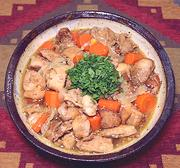

|
Chicken EscabecheChile - Pollo Escabechado | ||||
| Makes: Effort: Sched: DoAhead: |
3-1/4 # *** 1-1/4 hrs Prep |
Formerly made with Quail, this dish has been adapted to Chicken and Rabbit due to scarcity of Quail in Chile, and in North America too. | |||
|
|
2-1/2 ------- 1/3 1 3 1 1 1/2 1/3 ------- 12 8 1 ------- ar 1-1/4 ----- ar |
# --- c c t t T t --- oz oz --- c --- |
Chicken Meat (1) -- Marinade Wine Vinegar, r/w Wine, white (2) Bay Leaves (3) Paprika (4) Oregano, dry Salt Pepper, blk ---------------- Onion Carrots Chili, fresh (5) ------------ Oil (6) Broth (6) -- Serve With Boiled Potatoes or Steamed Rice. |
Do Ahead: - (15 minutes + marinate time)
|
amc_chkesb 220904 chk67 - www.clovegarden.com
©Andrew Grygus - agryg@aaxnet.com - Linking to and
non-commercial use of this page is permitted.